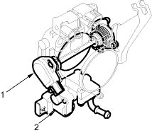
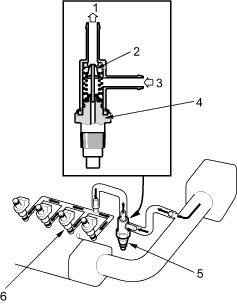
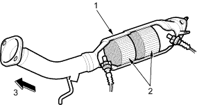

Intake Air System
Refer to the System Diagram to see the functional layout of the system.
Throttle Body
The throttle body is a single-barrel side draft type. The lower portion of the IAC valve is heated by engine coolant from the cylinder head.

- TP SENSOR
- IAC VALVE
Intake Air Bypass Control Thermal Valve
When the engine is running, the intake air bypass control thermal valve sends air to the injector.

- OUT
- VALVE
- IN
- WAX ELEMENT
- INTAKE AIR BYPASS CONTROL THERMAL VALVE
- INJECTOR

Catalytic Converter System
Three Way Catalytic Converter (TWC)
The TWC converts hydrocarbons (HC), carbon monoxide (CO), and oxides of nitrogen (NOx) in the exhaust gas to carbon dioxide (CO2), dinitrogen (N2), and water vapour.

- HOUSING
- THREE WAY CATALYSIS
- FRONT OF VEHICLE